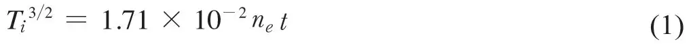
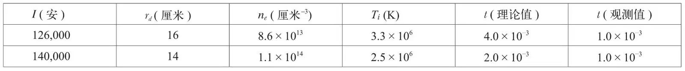

英文
英文小斯皮策
编者按
在哈威尔的ZETA设备上产生高温等离子体的新实验不仅为可控核聚变的研究带来一线光明，同时也为我们提供了一个研究极端条件下等离子体物理的机会。本文中物理学家赖曼·斯皮策指出了ZETA数据中一个谜团：正离子温度异常地快速上升，而理论上来说，由于它与热电子相互碰撞，因此获得能量的速率应该更加缓慢。这些发现说明，物理学家们对于等离子体内丰富的动力学现象以及导致这种现象的众多集体不稳定性仍需进一步的探索。在此后的半个世纪的时间里，动力学行为这个错综复杂且极具挑战性的问题成为等离子体物理中一个很常见的研究主题。 英文
索恩曼及其同事们在先前的文章中阐述了一个很有意思的结果，这个结果不仅说明我们在热核能量的可控释放中迈出了重要的一步，而且还提出了一个极具挑战性的有关完全电离的气体（即等离子体）的动力学问题。光谱线剖面和中子数提供了与正离子加速相矛盾的证据。然而，理论显示仅靠电子–离子碰撞并不足以解释观测到的升温速率，其中应该包含某些未知的机制。 英文
在之前的一篇文章[1]中，我曾提到正离子温度升高的速率是由电子–离子碰撞导致的。然而在英国和美国都有人提出，这个碰撞过程不足以解释正离子在释放电荷后获得能量的速率。斯蒂克斯[2]提出了一个相对简单的过程，可以用来确定电子–离子碰撞所导致的正离子升温的速率上限。在这种方法中，将电子温度取为离子温度Ti的三倍，设定电子密度为一常数ne，相当于完全电离并且管内最初存在的所有气体都浓缩在放电通道内，在这些条件下可以得到加热速率的最大值。据此（lnΛ取为15，见参考文献1），Ti由下列关系式给出：

式中，Ti的单位是K，ne的单位是每立方厘米的电子数，t的单位是秒。 英文
为了测定ZETA实验中的密度，我们在下面两个假设的基础上计算了放电通道的半径rd。一是假定在收缩过程中轴向磁场Bz方向上的通量保持不变，二是假定由电流产生的磁场Bθ等于放电界面上被压缩的轴向磁场。由于ZETA实现了高温，因此基本不会出现放电造成的轴向磁通量的明显泄漏。忽略有限的气压使得计算出的通道半径变小，并使ne增大，最后使Ti的增长率达到最大值。基于这些假设，对两个电流强度下的rd值进行计算，最初的Bz为160高斯，计算结果详见表1的第二列。 英文
表1

这些rd的值与哈威尔小组引用的数值是一致的。在第三列中ne的值对应的是最初存在于环内的所有氘在气压为1/8微米汞柱时完全电离并浓缩在电流通道内的情况。第四列中较低电流下的Ti值取自索恩曼等人的论文中的表1，它是根据中子产额而得出的。较高电流下的Ti值是根据哈威尔小组的论文中图6所示的O V三重线的多普勒宽度而得出的。在这种条件下，根据中子产额得到的离子温度升高了约50%，但还无法确定在这种情况下中子是什么时候开始产生的。在第五列中给出了以秒为单位的时间的值，这是根据式（1）计算出的正离子达到这个温度所需要的时间。 英文
为了进行比较，最后一列给出了以秒为单位的观测时间，在这个时间内正离子能量达到第四列的温度所对应的值。对于较小电流的情况，这是中子产额达到其峰值一半时所用的时间，如哈威尔小组的论文中图4所示。对于较大电流的情况，t（观测值）取O V辐射值达到其峰值强度时所用的时间，如哈威尔小组的论文中图5所示。这种简化常常使得t（理论值）偏小，修正值可能会比表1给出的值大约大一个数量级。因此差异看起来确实存在。似乎并没有能和观测到的阳离子的快速加热相吻合的基于静等离子体的任何简单模型。 英文
1956年，按哈威尔小组关于非热效应的加热过程的重要性所提出的建议，斯蒂克斯[2]得到了与马特峰计划的实验结果相类似的结论。在直径10厘米、轴长240厘米充满氦气的不锈钢环形管中进行放电，其初始气压为0.63微米汞柱，外部产生的轴向磁场为19,000高斯。磁场的分布使得外部的磁力线与材料壁交叉从而将放电限制在直径为5厘米的通道内。将300伏回路电压加在穿过粒子轨道的铁变压器周围，观测到的最大电流为8,000安；因为电流在磁场中只产生了较小的扰动，所以并不存在放电的箍缩。λ为4,686埃的氦II线的时间分辨光谱图表明，这些离子的动力学温度在1.5×10–4秒内增高到1.2×106K，而理论上在这一时间内所能达到的最大值是0.8×106 K。 英文
依据朗缪尔[3]的工作我们知道，在传统的气体放电中，电子以极快的速率达到麦克斯韦分布而单纯用粒子间的相互碰撞无法对此进行解释。最近盖伯及其同事们[4]的研究表明，这种效应主要是由等离子体鞘层中产生的振荡造成的，但具体的机制还无法解释。在ZETA中观测到的高离子能也许代表了一种与朗缪尔悖论相关的现象。为了分析可能包含的过程（例如振荡、冲击、磁流体湍流等），有必要收集与正离子速度被热能化的程度有关的信息，即分布函数在多大程度上接近于各向同性和麦克斯韦分布。显然，对热等离子体中协同效应的详细情况的实验研究，将是基础物理学科中一个非常有趣的课题。 英文
（沈乃澂 翻译；尚仁成 审稿）